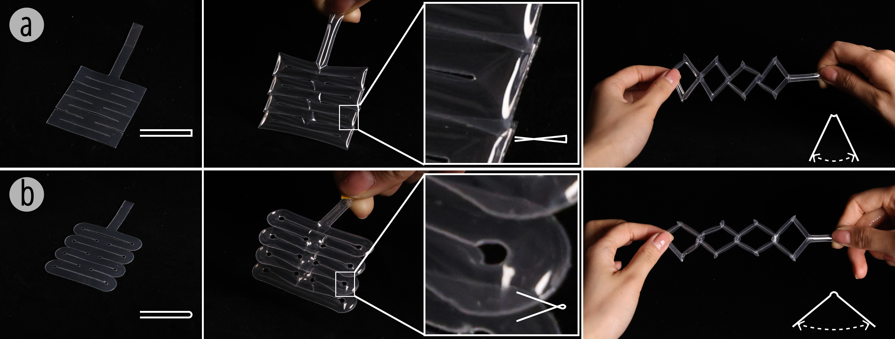
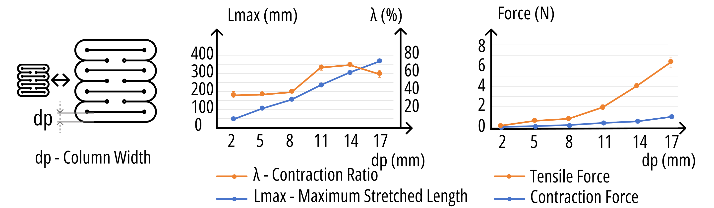
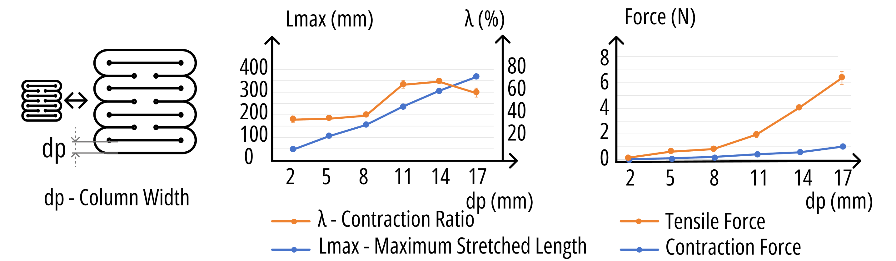
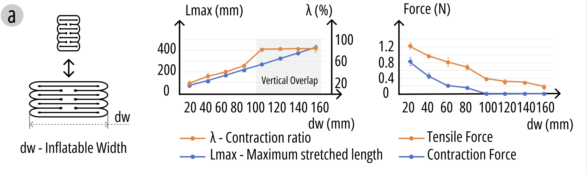
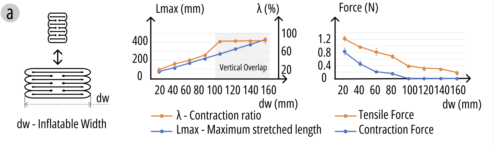
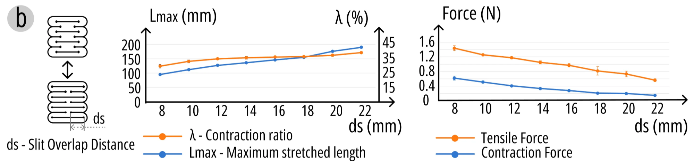
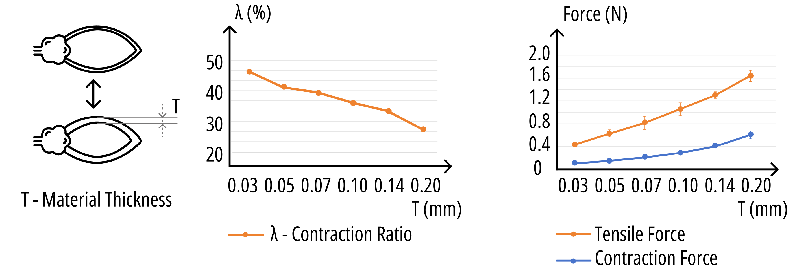
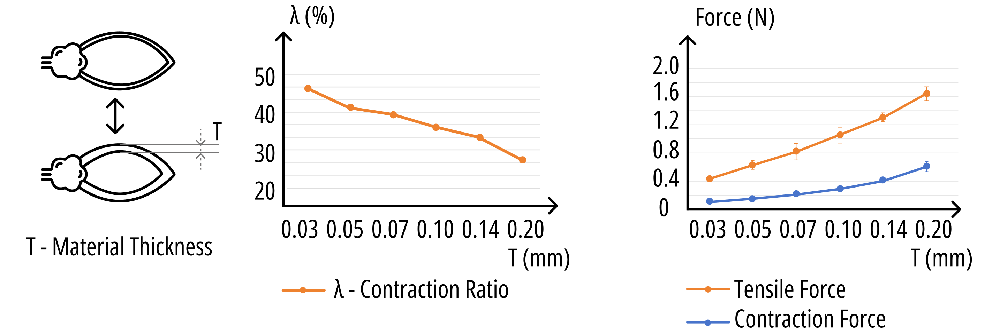

Primitives
The fundamental concept behind Kirigami-inspired inflatables uses simple straight slits to achieve stretchability and contractility. KiriInflate builds upon this by introducing key optimizations for enhanced performance and durability. We've introduced micro-circular ends at the tips of the slits to extend the effective length of each cut and allow for a greater range of stretch. These rounded ends also facilitate better overlapping during contraction, improving overall compressibility. Furthermore, redesigning the original rectangular corners of the internal air channels into smooth arcs reduces stress concentration, a common cause of rupture, significantly enhancing airtightness stability.
How it Works
KiriInflate primitives exhibit three distinct states based on the inflation process:
Uninflated
In this state, the kirigami cuts allow for significant, easy stretching, and the structure remains soft and highly flexible.
Inflating
During this phase, air pressure drives the structure to contract. The heat-seal layout and kirigami cut design shape the deformation pattern.
Inflated
Once fully inflated, the structure maintains a compact, contracted form. While it becomes stiffer, it remains stretchable, and its resistance to stretching increases with air pressure. The combination of heat sealing and slits provides tunable mechanical behavior, allowing for both active contraction and passive stretching.
Standard Sample Parameters
- Material Thickness: 0.07 mm per side
- Scale: 56.0 mm × 64 mm
- Number of Units: 4
- Slit Overlap Distance: 15.0 mm
Customization Options and Actuation Control
The performance of inflatable Kirigami structures can be affected by various parameters. KiriInflate structures offer high programmability of geometric and mechanical properties through customization of slit patterns on 2D surfaces, allowing for rapid formation of stretchable 3D geometries with tailored mechanical behaviors. Key parameters to adjust include:
Scale
Larger inflatables generally increase stretchable length and contraction ratio (up to a point), while both contraction and tensile forces increase. Very large sizes may see a slight decrease in contraction ratio due to material resistance.
Note: In experiments, different material thicknesses were applied to inflatables of varying sizes to simulate real-world conditions; larger inflatables used thicker materials, and smaller ones used thinner materials.
 

Inflatable Width
Increased width substantially increases maximum stretchable length and can lead to higher contraction ratios, but tends to decrease both contraction and tensile forces.
 

Slit Overlap Distance
Increased overlap distance significantly enhances contraction ratio and stretchability, but concurrently decreases both contraction and tensile forces.
Material Thickness
Decreasing material thickness increases the contraction ratio due to lower internal stress. However, this also leads to lower contraction and tensile forces.
 

Internal Pressure
Dynamically tunes stiffness, elasticity, and stretchability.
Application Scenarios
The tunable motion and elasticity of KiriInflate primitives make them suitable for diverse interactive applications. They can provide tactile feedback, adaptive wearable support, or dynamic shape reconfiguration.
Design Tool
An online design tool built with Rhinoceros and Grasshopper is available to assist users in designing parametric KiriInflate structures and exporting fabrication files. The initial settings for all structures are based on our standard sample.